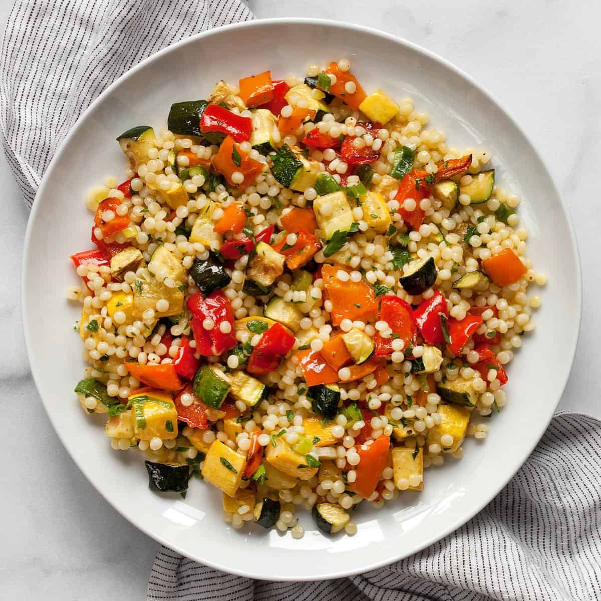

CousCous with Vegetables

It doesn't get healthier than this
It's vegetables again, but this time with CousCous.
The wonderful dish from the Maghreb straight to your belly!
- Couscous
- Vegetables
- More Vegetables/li>
- Clean and cut the Vegetables
- Clean and cut more Vegetables
- Heat all the Vegetables in a pan
- Add water and couscous to the pan
- Let the couscous swell for 5 Minutes
Back